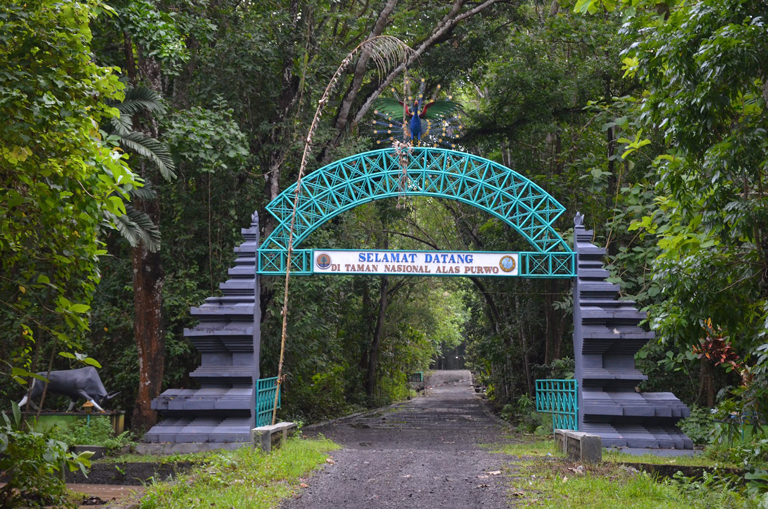
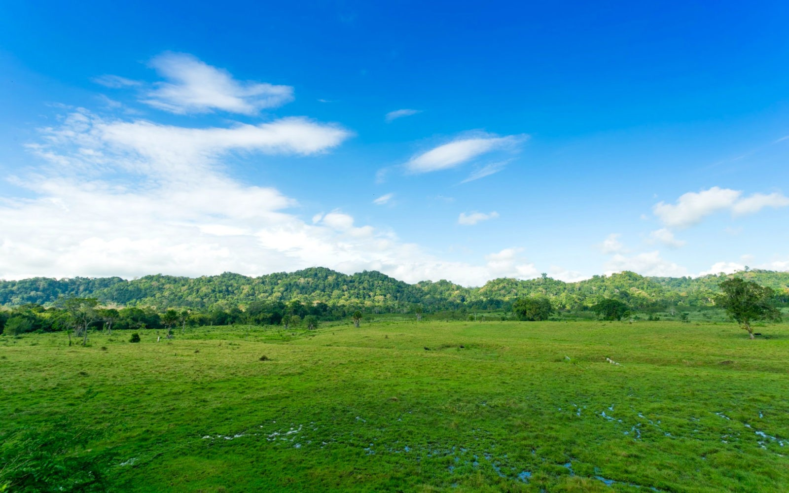
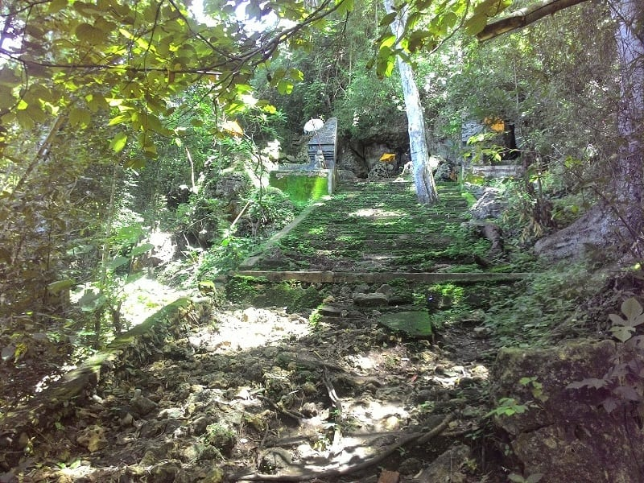
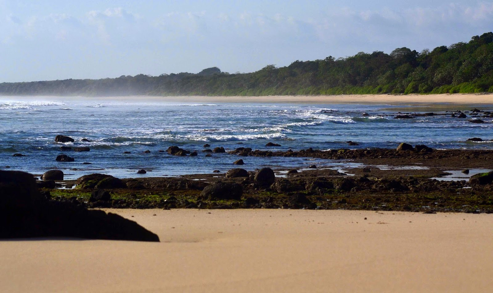
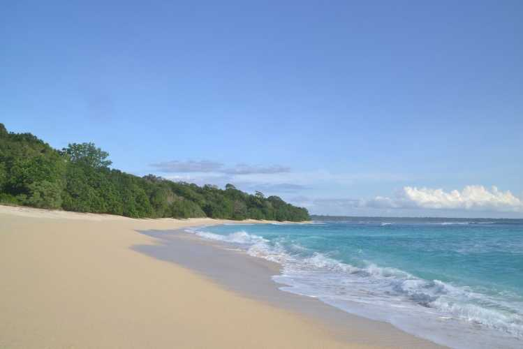
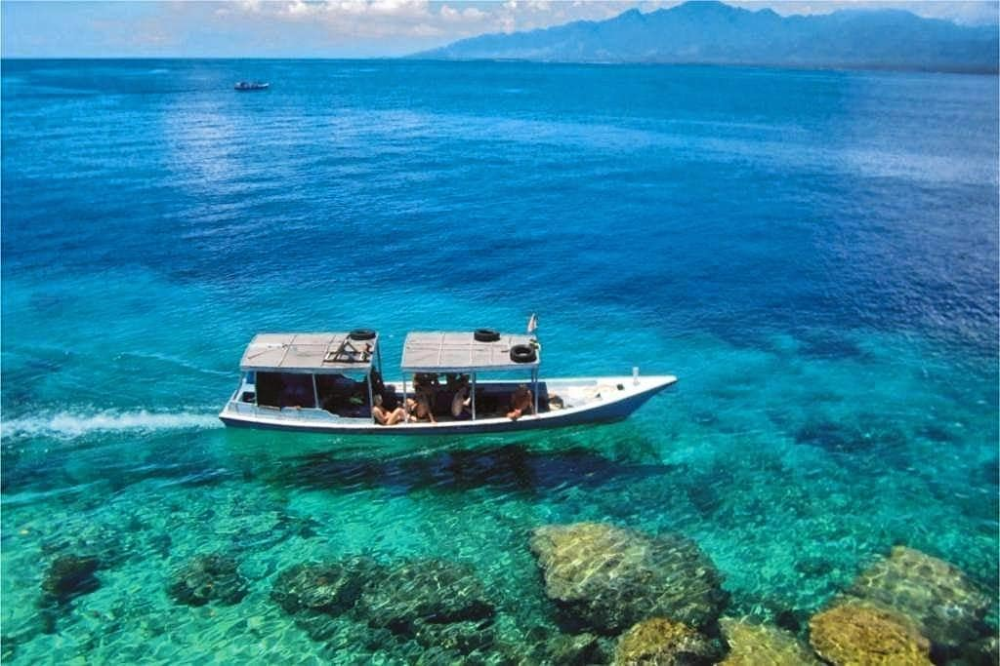

Wisata Kalipait
Mesti terlihat sederhana dan kurang terkenal seperti tempat lainnya, Kalipait menyimpan banyak wisata yang tentunya sangat menarik untuk dikunjungi apalagi dengan adanya waktu liburan bersama keluarga tercinta.
Ada apa aja sih? Yuk, kita cek!!!
Padang Savana Sadegan
Bukan hanya Afrika yang memiliki padang savana atau padang rumput alami yang luas.
Di Jawa Timur sendiri, terdapat sejumlah padang rumput yang salah satunya berada di daerah Banyuwangi, tepatnya di Kecamatan Tegaldlimo dan masuk dalam kawasan Taman Nasional Alas Purwo. Padang rumput bernama Savana Sadengan ini merupakan salah satu dari sekian padang savana yang ada di Jawa.
Padang rumput Sadengan berjarak sekitar 2 km dari pintu masuk pos Rawa Bendo. Untuk mengelilingi padang rumput seluas 80 hektar ini pengunjung bisa menyewa mobil jeep milik Perhutani.
Ada banyak binatang liar yang bisa disaksikan di sini mulai dari kumpulan banteng, rusa, kijang, ajag, babi hutan, hingga macan tutul.
Selain satwa mamalia, Padang Sadengan juga memiliki sejumlah koleksi burung liar. Tengok saja keberadaan elang jawa, elang ikan kepala kelabu, elang ular bido, elang laut perut putih, srigunting, jalak putih, ayam hutan merah, peregam, blekok sawah, bangau sendang lawe, merak hijau, dan juga burung-burung yang lainnya.
Goa Istana
Salah satu objek wisata di Taman Nasional Alas Purwo adalah Gua Istana. Selain untuk wisata, gua ini jadi tempat favorit para pertapa untuk bersemedi. Konon, Presiden Soekarno pernah mampir ke gua ini.
Untuk menuju gua ini, kami harus trekking sejauh 2 kilometer dari Pos Resor Pancur melewati hutan bambu. Suasananya masih sangat alami, hingga terdengar suara aneka burung yang saling bersahutan.
ada banyak dupa dan bekas kardus atau koran-koran yang dipakai sebagai alas bagi para pertapa. Menurut polisi hutan Taman Nasional Alas Purwo, para pertapa yang bersemedi di sini adalah untuk memohon kepada Yang Maha Kuasa untuk rezeki dan kesehatan.
Pantai Pancur
Di sekitar hutan ini, ada beberapa pantai yang cukup menarik untuk dikunjungi. Pantai Pancur salah satunya. Pantai Pancur sendiri terkenal dengan keunikan sungainya.
Pantai Pancur berada tak jauh dari Resort Pancur yang merupakan bangunan resort dan pos penjagaan. Anda bisa menginap di sini kala bertandang ke Pantai Pancur. Jarak pantai dari pos Rowobendo atau pintu masuk Taman Nasional Alas Purwo sekitar 5 km.Sementara jika dari Trianggulasi sekitar 3 km.
Nama Pantai Pancur berasal dari adalnya aliran sungai kecil berair tawar yang langsung bertemu dengan air laut. Aliran sungai ini cukup unik karena menyerupai air terjun kecil sehingga disebut pancur yang jika diartikan berarti air mancur atau pancuran.
Lokasi aliran sungai mirip air terjun ini berada di samping tangga yang menuju pantai. Hamparan pasir putihnya yang panjang dihiasi dengan bebatuan berbagai ukuran di beberapa sisinya. Selain itu lumut-lumut hijau yang berada di bebatuan semakin menambah warna di Pantai Pancur. Anda bisa berjalan-jalan di bibir pantai menikmati debur ombak menjilat kaki anda dan menikmati lembut pasirnya.
Pantai Parang Ireng
Kalau pantai pada umumnya berpasir putih atau agak kecoklatan, maka pantai yang satu ini memiliki tiga warna. Pantai Parang Ireng namanya. Pantai ini terlihat berwarna hitam, hijau dan putih. Warna hitam berasal dari bebatuan yang luas, hijau dari lumut-lumut di bebatuannya, dan putih dari pasir pantainya.
Pantai Parang Ireng lokasinya tak jauh dari pantai G-Land. Mungkin, sekitar 2-3 kilometer sebelum Pantai G-Land dan bisa ditempuh dengan kendaraan mobil atau motor.
Teluk Biru
Satu lagi surga tersembunyi di Banyuwangi yang masih belum terkenal yaitu Blue Bay atau Teluk Biru.
Teluk Biru mempunyai keindahan bawah laut yang indah.berbeda dengan green bay yang mempunyai keindahan pasir putih dan warna air lautnya yang kehijauan.
Lokasi Teluk Biru berada di Muncar Banyuwangi di balik semenanjung Sembulungan, Teluk ini masih masuk di kawasan Taman Nasional Alas Purwo. Masyarakat sekitar menyebut teluk biru dengan sebutan Senggrong.
Akses darat menuju Teluk biru masih belum ada, jadi anda harus menyewa perahu atau boat untuk pergi kesana, harga pasaran menyewa perahu di banyuwangi sekitar Rp 300.000 hingga Rp 500.000.
Lama perjalanan dari Muncar ke Teluk Biru sekitar 2 jam perjalanan. Waktu terbaik pergi ke Teluk Biru adalah di Jam 2 dini hari sehinnga anda bisa menikmati sunrise di tengah laut.